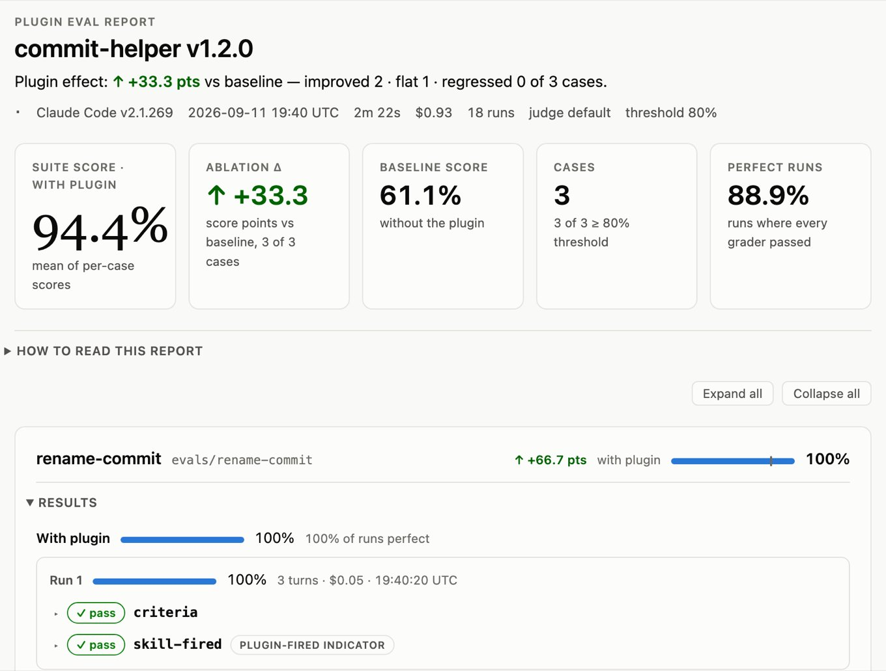

使用 evals 测试插件
为您的 Claude Code 插件编写 eval 用例，使用 claude plugin eval 运行它们，对结果进行评分，与无插件基线进行比较，并在 CI 中基于分数进行门控。
claude plugin eval 针对一套测试用例运行您的插件并对结果进行评分。每个用例都是一个现实的提示加上一个或多个评分器。评分器是对 Claude 生成的内容的通过/失败检查，例如对回复的正则表达式、是否调用了特定工具，或者由第二个模型判断回复的评分标准。
您不必手动编写该套件；claude plugin eval init 会询问您关于您的插件的问题，提议用例和评分器，尝试它们，并编写文件。您也可以要求 Claude 从您已经打开的会话中执行相同操作。
使用 evals 来：
- 衡量您的插件可靠地引导 Claude 达到正确结果的程度
- 在您更改插件或发布新模型时捕捉回归
- 查看与无插件相比插件的贡献
本页面适用于拥有可工作插件并想要测试其行为的插件和技能作者，以及在 CI 中对插件更改进行门控的团队。对于在 Claude Code 对话中迭代单个技能，技能创建者插件使用其自己的 evals/evals.json 格式运行类似的比较，两个工具都不读取另一个的用例文件。要创建插件，请参阅创建插件；要检查插件文件的语法和架构错误而不是其行为，请使用 claude plugin validate。
每次 eval 运行和每个评分器都是对您账户的真实模型调用，计入您计划的使用量或您的 API 账单，因此请先检查要求。然后创建您的第一个 eval 套件，或者如果您已经有一个，请转到在 CI 中运行 evals。
要求
要运行插件 evals，你需要：
- Claude Code v2.1.269 或更高版本。运行
claude --version检查，运行claude update升级。 - Git 2.31 或更高版本（如果已安装 git）。运行
git --version检查。使用较旧的 git，claude plugin eval在运行任何案例之前停止。没有 git，它正常运行。 - 一个包含
plugin.json或.claude-plugin/plugin.json清单的插件目录，或一个技能目录插件。 - 与您的常规 Claude Code 会话相同的身份验证和模型提供商。Eval 运行、评判评分器和
claude plugin eval init使用您的凭据调用模型，因此它们计入您的计划用量限制或 API 账单。当命令报告成本时，该数字是这些调用的列表价格估计。如果您在 Amazon Bedrock、Google Cloud 的 Agent Platform 或 Microsoft Foundry 上运行 Claude Code，请从导出与常规会话相同的提供商变量的 shell 中运行该套件，因为每次运行都会从该 shell 继承这些变量，如env字段所述。
eval 运行如何工作
一个 eval 套件位于插件内名为 evals/ 的目录中，布局如编写和完善用例所示。每个用例都是其自己的子目录，包含一个提示和一个或多个评分器。提示是使用你的插件的人可能输入的内容，例如其中一个技能应该处理的请求。
运行中发生的情况
对于每次用例运行，Claude Code 启动一个新的、隔离的非交互式会话，仅加载你的插件，发送提示，并让 Claude 工作直到完成或达到用例的轮次或时间限制。然后每个评分器检查最终回复、完整记录或 Claude 创建的文件，并通过或失败。
用例如何评分
一次非确定性代理的运行告诉你很少，所以每个用例默认运行三次。运行的分数是其通过的评分器的比例，如果你设置了权重则加权，用例的分数是其运行的平均值。当用例的分数达到 --threshold（默认为 1.0）时，用例通过。在模型调用中，一个套件大约进行 cases × runs 个代理运行，加上无插件基线的相同数量，再加上每个 llm 或 baseline 评分器每次运行三个短评判调用。
无插件基线
仅凭高分不能告诉你插件是否有帮助，因为 Claude 可能在没有插件的情况下也能做得很好。为了区分两者，一个用例的运行会重复进行，不加载任何插件，你会得到两个分数，WITH 和 W/OUT。它们的差异 Δ 是插件贡献的内容。如果一个用例在有插件和没有插件的情况下都得分 1.0，那么插件不是使其通过的原因。
这两组运行称为 with-arm 和 without-arm；与无插件基线比较涵盖了哪些用例仅运行 with-arm 以及评分器如何在两个 arm 之间评分。
创建您的第一个 eval 套件
本演练为您自己的插件编写一个用例，运行它，并读取结果。在开始之前，请确保您具备：
- Claude Code v2.1.269 或更高版本以及其他要求
- 在插件根目录打开的终端，即包含
plugin.json或.claude-plugin/plugin.json的目录 - 插件中您想测试的一个 skill，以及一条用户会输入且应触发该 skill 的请求
1. 创建用例
从插件根目录运行：
claude plugin eval init
如果 Claude Code 尚未信任此目录，它首先会询问 Trust this plugin directory?；回答 y。
随后会打开一个交互式 Claude Code 会话。Claude 读取您的插件并询问您理想的结果是什么样的，提议应该和不应该触发插件的提示词，为每个提示词设计评分器，试运行一次以检查它们的行为，并在 evals/ 下为每个提示词写入一个用例目录，每个目录以其提示词命名。
当 Claude 告诉您套件已准备好时，使用 /exit 或 Ctrl+D 退出该会话以返回 shell。
如果您已经在插件根目录打开了 Claude Code 会话，也可以改为让 Claude 在那里运行 claude plugin eval init。Claude 会运行该命令，然后在该对话中询问您相同的问题。
如果您更愿意自己编写用例以准确了解文件包含的内容，请按照手动编写用例操作，然后回到这里运行它。
2. 运行套件
回到插件根目录下的 shell，运行 evals/ 下的每个用例：
claude plugin eval .
您已经在第 1 步中信任了此目录，所以运行会立即开始。如果您改为手动编写了用例，运行首先会询问 Trust this plugin directory? [y/N]；回答 y。运行可以访问什么解释了您所同意的内容。
每个用例在加载插件的情况下运行三次，在不加载插件的情况下运行三次，因此一个用例共六次运行。每次运行完成时，会打印一行进度，显示该运行的分数和每个评分器的判定。
3. 读取摘要
套件完成后，您会看到一个摘要表，随后是报告的位置：
CASE WITH W/OUT Δ RUNS COST NOTES
first-case 1.00 0.33 +0.67 6 $0.41
1 case(s) · mean Δ +0.67 · 74s · $0.41
Report: /Users/you/my-plugin/evals/results/2026-09-10T17-02-11-482Z/report.html
Published: https://claude.ai/... · keep local next time with --no-publish
WITH 是加载插件时该用例的分数，W/OUT 是不加载插件时的分数，正的 Δ 表示插件提高了分数。COST 是模型调用按标价估算的费用，NOTES 显示 with-arm 中权重最高的失败评分器的解释或该运行的错误。
4. 打开报告并迭代
打开 Published: URL，或在没有 Published: 行时打开 Report: 路径，以查看每个评分器对每次运行的判定和解释，对于 llm 评分器还可查看评判者的投票及其评判的摘录。Published: 行仅在您的账户可以发布报告时出现。
最常见的首个发现是 Δ 接近零且用例的 tool_used: Skill 评分器失败，这意味着 Claude 在自然措辞下没有选择您的 skill。调整该 skill 的 description，再次运行 claude plugin eval .，并进行比较。
要以更少的运行次数迭代单个用例，可以只运行单个 arm 一次。单次运行噪声较大，因此在信任任何更改之前，请以默认的三次运行进行确认。只运行一个 arm 时，表格显示 SCORE 和 PASS% 列，而不是 WITH、W/OUT 和 Δ：
claude plugin eval . --case <case-name> --runs 1 --ablation none
将 <case-name> 替换为 evals/ 下的某个目录名。
编写和完善用例
claude plugin eval init 编写的用例是您可以打开、更改和添加的纯文件。用例是插件 eval 目录下的一个目录，包含 prompt.md、case.yaml 或两者。每个用例至少要有一个评分器，作为 graders/<name>.md 文件或 case.yaml 中的 graders: 条目，因为没有评分器的用例无法加载。要对用例进行分组，将它们嵌套在不是用例本身的目录下；用例目录内的任何内容，例如 graders/ 和 fixture 文件，都属于该用例。
这是 claude plugin eval init 编写的布局，也是新套件要使用的布局。eval 套件参考有完整的树，包括 mocks 和结果：
my-plugin/
├── .claude-plugin/plugin.json
├── skills/...
└── evals/
├── first-case/
│ ├── prompt.md # frontmatter: case fields; body: the prompt
│ ├── graders/
│ │ ├── criteria.md # frontmatter: type + options; body: rubric or pattern
│ │ └── skill-fired.md
│ └── case.yaml # optional: only for context.* fields
├── ignores-unrelated-request/
│ └── ...
└── results/ # written by each run; add to .gitignore
手动编写用例
让 Claude 使用 claude plugin eval init 编写用例是推荐的路径。要自己编写一个，请从空白模板开始。以下命令编写一个名为 first-case 的用例，带有占位符 prompt.md 和一个占位符评分器，并且不运行任何内容：
claude plugin eval init --bare first-case
evals/first-case/
├── prompt.md # the prompt sent to Claude, plus run limits
└── graders/
└── criteria.md # one grader: how to score the result
在 prompt.md 中，您编写 Claude 在每次运行中接收的消息，并在其 frontmatter 中设置运行的限制和用例可以使用的工具。打开 evals/first-case/prompt.md，将占位符正文替换为您的某个 skill 应处理的请求，措辞应采用用户实际输入的方式，而不是直接点名该 skill。此示例针对的是一个起草提交信息的 skill；请使用您自己的请求：
---
max_turns: 10
allowed_tools: [Read, Glob, Grep, Skill]
---
Write me a commit message for this change: I renamed getUser to fetchUser and updated the three call sites.
每次运行都在空工作目录中开始，所以请将任务需要的任何内容放在提示词本身中，或首先设置工作区。
frontmatter 字段的完整列表涵盖了模型、超时时间、标签和环境变量。
graders/ 下的每个文件都是运行后应用的一个检查。打开 evals/first-case/graders/criteria.md 并用评判模型的评分标准替换占位符，写成具体的 PASS 和 FAIL 条件：
---
type: llm
---
PASS if <what a correct response contains>.
FAIL if <what a wrong or missing response looks like>.
然后添加第二个评分器，检查答案是否由您的 skill 产生。创建 evals/first-case/graders/skill-fired.md，将 your-skill-name 替换为该 skill 在 skills/ 下的目录名称，这也是 Claude 调用它时使用的名称：
---
type: tool_used
tool: Skill
input_match: '"skill"\s*:\s*"(?:[\w-]+:)?your-skill-name"'
---
当 Claude 在运行期间至少调用一次该 skill 时（包括通过其命名空间形式 plugin-name:skill-name 调用），此评分器通过。
评分器类型列出了其他可用的检查，例如匹配正则表达式或确认文件已创建。
保存两个文件后，按照快速入门的方式，从插件根目录使用 claude plugin eval . 运行用例。
在 prompt.md 中设置运行限制和工具
在 prompt.md frontmatter 中设置用例的 max_turns、timeout_seconds、model、tags 和它可以使用的 allowed_tools；prompt.md frontmatter 参考列出了每个字段及其默认值。
Claude 会完全按照您编写的内容接收正文。其中的 @path 提及不会扩展为文件附件，所以如果 Claude 需要读取文件，请在 allowed_tools 中为其授予相应工具。
选择和加权评分器
评分器的 frontmatter 设置其 type，以及可选的 weight（使其在运行分数中占更大比重）和一个 arm（控制它如何针对基线评分）。在六种类型中，regex、tool_used、tool_order 和 file_exists 从会话记录和文件计算，不产生任何成本，而 llm 和 baseline 会调用评判模型并增加运行成本。
没有自定义代码评分器。
评分器类型列出了每种类型的选项和通过条件，评分器可以查看什么列出了 target 和 focus 接受的值。
默认情况下，llm 和 baseline 评分器的评判模型是 Claude Code 用于后台任务的模型。传递 --judge-model sonnet 或完整模型 ID 可自行选择评判模型。
选择提供稳定信号的评分器
llm 评分器要求模型做出判定，所以其答案可能在不同运行之间有所不同，并且它需要读取的文本越长，差异越大。以下习惯可使套件的分数足够稳定、值得信赖：
- 对于长输出（例如生成的文件），使用
regex评分器对文件内容进行评分，它每次都以相同的方式检查整个文件。将llm评分器留给短输出，并使用具体的 PASS 和 FAIL 条件编写评分标准。 - 为每个用例提供一个针对结果的评分器，例如最终消息或生成的文件，以及一个针对 Claude 产生该结果所采取步骤的评分器，例如
tool_used或tool_order。两者结合可以告诉您答案是否正确，以及是否由您的插件产生。 - 如果用例的
tool_used: Skill评分器通过但Δ为负，请先怀疑评判模型而不是插件。小型评判模型可能会因为格式与评分标准描述的不同而将正确答案标记为错误。使用--judge-model sonnet重新运行，并收紧评分标准，使格式不会决定判定结果。 - 要检查构建或测试在运行中是否通过，请让提示词要求 Claude 运行它并将结果写入文件，对该文件评分，并使用一个
input_match指明该命令的tool_used评分器来断言命令已运行。
针对无插件基线评分
当插件处于测试中时，用例通常在两个 arm 中运行。with-arm 是其加载插件的运行，without-arm 是相同数量的不加载任何插件的运行。摘要和报告显示两个分数和 Δ，即 with-arm 分数减去 without-arm 分数。
在以下情况下，用例仅运行 with-arm，所以它没有 W/OUT 分数或 Δ：
- 您传递了
--ablation none：每个用例运行一个 arm，当您不需要比较时（例如在迭代评分器时）可将成本减半。 - 用例恢复会话记录且目标是一个路径：当目标是
.之类的路径而不是已安装插件的名称时，context.history_file用例默认运行一个 arm，其假设是记录的对话已经反映了插件。运行会在 stderr 上打印single-arm (no Δ)通知，列出这些用例。要比较恢复的轮次在带插件和不带插件时的表现，请传递--ablation with-without。 - 没有为用例找到插件：当目标是一个路径时，Claude Code 无法定位其插件的用例也默认运行一个 arm。请参阅基线 arm 显示无插件来修复此问题。
在双 arm 运行中，某些评分器会被报告为 scored: false。像"skill 被调用"这样的检查在没有插件的情况下永远无法通过，所以将其计入会将 without-arm 推向零并夸大 Δ。为了保持两个 arm 可比较，Claude Code 在两个 arm 中都将此类评分器排除在分数之外，并在 with-arm 中仅将其报告为通过/失败指示器。这包括：
- 每个
tool为Skill的tool_used评分器 - 每个带有
target: mock_calls的regex评分器和每个带有focus: mock_calls的llm评分器，前提是用例中的每个模拟服务器都是您的插件声明的 - 任何您标记为
arm: with-only的评分器
三个设置会改变该排除行为：
- 每个评分器都被排除：如果用例中的每个评分器都在排除集中，它们会改为正常评分，因为否则将没有可评分的内容。
arm: both：在评分器上设置arm: both，使其无论如何都在两个 arm 中评分，这正适用于带有min: 0和max: 0的"不得调用 skill"检查。--ablation none：在--ablation none下，没有任何内容被排除，所以同一套件在两种模式下可能产生不同的绝对分数。
使用不同的 eval 目录
如果 evals/ 已被另一个工具占用，请将套件保留在不同的目录中。您可以在插件的 plugin.json 中记录该目录，以便每次运行和每个协作者都使用它，或在命令行上为单次运行传递它：
- 在
plugin.json中：添加"experimental": { "evals": "quality/evals" }。 - 在命令行上：将
--eval-dir quality/evals传递给claude plugin eval和claude plugin eval init。
如果您同时设置两者，则使用标志指定的目录。请提供仅由目录名称组成的相对路径，例如 qa 或 quality/evals。绝对路径或包含 .. 的路径不被接受：作为标志值时会报错，而不可用的清单值会打印一行 Warning:，运行将改用 evals/。用例、结果和 init 输出都会移动到该目录。
设置 fixtures 和 mocks
用例可能需要的不仅仅是提示：工作区中的文件或 git 存储库、要继续的早期对话，或来自你的插件与之通信的 MCP 服务器的答案。每个都在用例旁边设置，以便运行保持可重复。
播种工作区或对话
每次运行都在空工作区中开始。当用例需要的不仅仅是提示时，在 prompt.md 旁边添加一个 case.yaml，带有 context 块：
- Fixture 文件或 git 存储库：在用例目录中编写 Bash 脚本并在
context.scaffold_script中命名它。脚本作为你在代理沙箱外运行，仅当你传递--scaffold时，所以仅对你或你的组织编写的套件传递该标志。 - 要继续的早期对话：将记录保存为
.jsonl文件并在context.history_file中命名它，用例的提示成为下一个用户轮次。当目标是一个路径时，这样的用例默认不运行基线 arm。 - Claude 在运行期间可以读取的 Fixture 目录：在
context.add_dirs中列出它们。
case.yaml 也需要 schema_version: "1.1" 和 name；case.yaml 字段参考有完整列表。
这个 case.yaml 从脚本播种工作区并让 Claude 从 resources/ 目录读取 fixtures：
schema_version: "1.1"
name: changelog-from-diff
tags: [smoke]
context:
scaffold_script: fixture.sh
add_dirs: [resources]
scaffold 脚本在空工作区中启动，具有小的固定环境：你的 shell 的 PATH、HOME 设置为运行的临时主目录、TMPDIR 和一些常数，如 TERM=dumb。你的 shell 中没有其他内容到达它，用例的 EVAL_* 变量也不会。如果脚本以非零退出或运行时间超过 120 秒，该运行得分为 0，出现 scaffold failed 错误。仅将脚本用于文件和 git 状态，因为它写入的项目配置未被加载。
Mock MCP 服务器
你可以评估一个插件，其 skills 调用 MCP 工具，而不需要它们后面的真实服务。在 evals/mocks/<server>/<tool>.md 下为整个套件放置一个 Markdown 文件，或在用例自己的 mocks/ 目录下为一个用例，其中 <server> 是你的插件的 MCP 配置中服务器的名称。
运行永远不会启动你的插件的真实 MCP 服务器，除非你要求。Claude Code 在每个服务器自己的名称下注册一个替代服务器。带有 mock 文件的工具从它回答，并且无需 --allow-tools 授予即可允许，没有 mock 文件的工具对 Claude 不可用。完全没有 mocks 的服务器在用例的 mocked: 进度行中显示为 plugin_<plugin>_<server>[not started: no mock]。
文件的正文是工具返回给 Claude 的内容。这个 mock 代替了名为 tracker 的服务器上的 create_issue 工具，检查 Claude 发送的输入，并回显标题。将其保存为 evals/mocks/tracker/create_issue.md：
---
expect:
title: string
priority: [low, medium, high]
---
Created issue #4821: {{input.title}}
mock 文件的正文和 frontmatter 接受这些选项：
- 替换：使用
{{input.<field>}}从调用的输入插入字段，使用{{file:fixtures/{input.<field>}.json}}插入 mock 旁边的 fixture 文件的内容。 expect:：expect:块保护输入。如果调用违反它，运行以分数 0 中止并记录原因，以便用例可以断言你的插件要求服务器执行的操作。error: true：设置error: true以将正文作为工具错误返回。type: agent：设置type: agent，让评判模型根据正文中的指令以服务器身份回答。对 Agent mock 的调用共享一个每次运行的预算，其值为用例max_turns的四倍，超出预算的调用会以分数 0 中止运行。
mock 文件参考列出了每个键和 _server.md 和 _tools.json 文件。
要评分调用本身，将评分器指向 target: mock_calls。
要改为针对插件的真实 MCP 服务器运行，传递这些标志之一。无论哪种方式，这些进程都作为你在代理沙箱外运行，它们的工具需要 --allow-tools 授予：
--allow-real-servers：为你没有 mock 的每个服务器启动真实进程，并继续从它们的文件回答 mocked 工具--mocks off：完全忽略mocks/并启动插件声明的每个服务器
重放代理 mock 答案
type: agent mock 使用对 --judge-model 的调用回答，所以其输出在运行之间变化并在你更改评判模型时改变。当运行完成而没有错误或中止时，Claude Code 在结果目录中的 mock-recordings/ 下保存代理 mock 给出的每个答案。
打开那里的 ADOPT.txt 以查看每个记录和 .replay/<server>/ 目录以复制到，在产生它的 mock 旁边。在你复制记录后，后续运行从它回答相同的调用，没有模型调用。将 mocks/.replay/ 与 mocks/ 的其余部分一起提交，以便 CI 运行是可重复的。
运行 evals
一旦套件存在，claude plugin eval 就会运行它。您可以使用 target 参数选择运行哪个插件和哪些用例，使用 --allow-tools 授予用例所需的任何工具（超出只读集合），并使用其他选项控制运行次数、模型、成本和输出。
选择要评估的内容
大多数时候，您从插件根目录运行 claude plugin eval .，这会运行套件中的每个用例，并加载您所在的插件。要运行单个用例文件，或评估您安装的插件而不是您正在开发的插件，请传递不同的 target：
| Target | 运行内容 |
|---|---|
插件的根目录，例如 . |
其 eval 目录下的每个用例，加载该插件 |
单个 prompt.md 或 case.yaml 文件 |
该用例，加载其所在的插件 |
已安装的插件（按名称），name 或 name@marketplace |
该插件及其 eval 目录中的用例，就地读取或从已安装的副本读取。结果写入当前目录下的 ./evals/results/，或使用 --eval-dir 时写入 ./<dir>/results/ |
name@skills-dir |
相同，用于 skills-directory 插件 |
| 省略 | 当前目录作为路径 |
添加 --case <glob> 按用例名称过滤，添加 --tag <tag> 保留具有任何给定标签的用例。
将 target 放在 --tag、--allow-tools 和 --json 之前。前两个接受列表，--json 接受可选路径，所以它们每个都会将后面的 target 读取为自己的值。
授予工具
运行永远不会停下来请求权限。需要授予但您没有授予的内置工具，例如 Bash、Write、Edit、WebFetch 和 WebSearch，会从会话中移除，所以 Claude 根本无法调用它们。
运行仅允许用例在 allowed_tools 中列出的只读工具，来自 Read、Glob、Grep、NotebookRead、Skill、AskUserQuestion、Agent、TodoWrite 和任务工具 TaskCreate、TaskGet、TaskList、TaskUpdate 和 TaskStop，加上您使用 --allow-tools 授予的任何工具。该授予适用于运行中的每个用例。要让用例使用 Bash、Write、Edit、WebFetch 或 WebSearch，请自行授予它们：
claude plugin eval . --allow-tools Write Edit "Bash(npm test *)"
当用例请求您没有授予的工具时，进度输出会将其列为 not granted。模拟 MCP 服务器上的工具不需要授予。真实插件 MCP 服务器上的工具需要服务器启动（使用 --allow-real-servers 或 --mocks off）和按名称授予，例如 --allow-tools "mcp__plugin_my-plugin_github__*"；插件的 MCP 工具命名为 mcp__plugin_<plugin>_<server>__<tool>。
当您以任何形式授予 Bash 时，每个命令都在 Claude Code 的 OS 级沙箱 下运行。写入被限制在运行的工作区，您的主目录和 Claude Code 配置不可读，网络访问限制为您使用 --allow-tools "WebFetch(domain:example.com)" 授予的域。如果您在没有沙箱后端的机器上授予 Bash 或 PowerShell，Claude Code 会拒绝每次运行而不是无限制地运行它，用例会显示运行错误，通常得分为 0。原生 Windows 没有后端，所以请在 WSL2 下运行授予 shell 的套件；在 Linux 上，请首先安装 bubblewrap 和 socat。请参阅 沙箱隔离前提条件。
命令选项
此表涵盖运行次数、模型、评分、成本、工具授予、模拟和输出的选项。运行 claude plugin eval --help 获取完整列表，其中还包括 --case、--tag、--eval-dir、--no-scaffold、--report 和 --verbose。
| 选项 | 默认值 | 效果 |
|---|---|---|
--runs <n> |
每个用例的 runs，否则为 3 |
每个用例每个分支的运行次数 |
-j, --concurrency <n> |
1 |
一次最多运行这么多个 Agent 运行，从 1 到 8。它们共享您账户的速率限制，所以这缩短了实际耗时，而不是将吞吐量提高到超过该限制。结果保持用例顺序 |
--model <model> |
每个用例的 model，否则为 ANTHROPIC_MODEL（如果设置），否则为 Claude Code 的默认值 |
被测试 Agent 的模型。在 CI 中固定它，以免模型推出被误认为是插件回归 |
--judge-model <model> |
用于后台任务的模型 | 用于 llm 和 baseline 评分器的模型 |
--ablation <mode> |
按用例决定；请参阅 对照无插件基线评分 | 是否还要在不加载插件的情况下运行每个用例，以衡量插件带来的增益。none 运行一个分支；with-without 添加无插件基线 |
--threshold <0..1> |
1.0 |
当用例的 with 分支得分至少为此值时，用例通过。任何低于它的用例都会使命令以 1 退出 |
--max-cost-usd <usd> |
无上限 | 运行的标价成本估算的上限，而不是计划用量的上限。在每次运行开始前检查。一旦花完，不会再启动任何运行；已开始的运行会完成，所以花费可能会因这些运行而超过上限。如果有任何运行未启动，命令会以 2 退出并给出部分结果 |
--allow-tools <tools...> |
无 | 授予超出只读集合的工具。请参阅 授予工具 |
--scaffold |
关闭 | 运行每个用例的 scaffold_script |
--trust-plugin |
关闭 | 对于您愿意自行运行其代码和套件的插件，跳过首次运行信任提示。在 CI 中传递它，以便作业永远不会被该提示拒绝或卡在该提示处等待。请参阅 运行可以访问什么 |
--mocks <mode> |
record |
record 从 模拟 回答 MCP 工具调用，不启动插件的真实服务器，并保存 Agent 模拟答案以供重放。off 忽略模拟并启动插件的真实 MCP 服务器 |
--allow-real-servers |
关闭 | 使用 --mocks record 时，也为没有模拟的服务器启动插件的真实 MCP 服务器 |
--json [path] |
关闭 | 将 结果文档 打印到 stdout，或将其写入以 .json 结尾的路径。运行是静默的：没有进度行或摘要表 |
--output-dir <dir> |
<eval dir>/results/<timestamp>/ |
aggregate-result.json 和 report.html 的输出位置 |
--no-publish |
将 HTML 报告保留在本地。请参阅 HTML 报告 | |
--publish-report |
即使在默认会保留在本地的情况下（例如由 Claude Code 会话启动的运行）也发布报告 | |
--keep-temp |
关闭 | 保留每次运行的沙箱目录并打印其路径，用于调试 Claude 生成的内容 |
在 CI 中运行 evals
在您的 CI 作业中，使用 --json 运行套件以写入结果供存档，并根据退出码使构建失败。传递 --trust-plugin 以便作业永远不会在 首次运行信任提示 处等待，固定两个模型以便得分在一段时间内可比较，将报告保留在本地，并设置成本上限作为上限：
claude plugin eval . \
--trust-plugin \
--json results.json \
--threshold 0.8 \
--model claude-sonnet-5 \
--judge-model claude-haiku-4-5 \
--no-publish \
--max-cost-usd 20
作业的退出码说明了发生的情况：
| 退出码 | 含义 |
|---|---|
| 0 | 套件通过：每个用例得分均达到或高于 --threshold，且没有其他原因导致运行失败 |
| 1 | 用例得分低于阈值，用例文件加载失败，未找到用例，无法启动运行，或某次运行因 API 错误而结束。当插件目录不受信任且未传递 --trust-plugin、选项无效或无法写入 --json 结果时，也会返回此值 |
| 2 | 部分运行：达到了 --max-cost-usd 上限，或您的凭据在首次运行前或首次运行时被拒绝。results.json 仍会写入，并带有 partial: true 和原因 |
| 130 | 已中断。部分结果已写入 |
| 143 | 已终止，例如因 CI 超时 |
with 减 without 的差值会被报告，但永远不会改变退出码，写入或发布 HTML 报告时出现的问题也不会。
要查看用例得分低的原因，请在本地运行它且不使用 --json，以便打印每次运行的进度和评分器行。
CI 运行器还需要具备以下条件：
- 安装和凭据：CI 运行器需要安装 Claude Code，并需要 环境中的凭据，例如
ANTHROPIC_API_KEY或您的云提供商的变量。 - 信任：如果没有
--trust-plugin，检出目录尚未被 Claude Code 信任的作业需要经过 首次运行信任提示，无法询问的运行会被拒绝并以 1 退出。 - CI 中的
init：claude plugin eval init需要终端来向您提问；在 CI 中，请运行claude plugin eval init --bare <name>以获取空白模板。
要保持成本可预测，请为每次更改都运行的快速套件仅使用不调用评判模型的评分器，在不需要 Δ 的地方使用 --ablation none，并将 partial: true 文档和带有 skippedPaidGraders 的运行排除在您绘制的任何趋势之外。
读取结果
每次至少有一个用例的运行都在 eval 目录内写入 results/<timestamp>/ 目录，包含 aggregate-result.json 和 report.html。对于在插件下的路径目标；对于你命名的插件，它在你的当前目录下，如目标表所示。摘要表、JSON 和报告都呈现相同的结果数据。
HTML 报告
report.html 是一个单一的自包含文件，不进行外部请求，所以你可以将其附加到 CI 作业或从磁盘打开它。这个例子是使用 --threshold 0.8 运行的三用例套件报告的顶部；显示的成本是列表价格估计，随模型和用例数量而变化：

从上到下阅读：
- 判决行和瓷砖回答插件是否在整个套件中有帮助。套件分数是每个用例 with-plugin 分数的平均值，Ablation Δ 是该分数高于或低于基线分数的程度，Cases 计数有多少个达到了阈值。Perfect runs 是 with-plugin 运行中每个评分器都通过的比例。
- 每个用例卡显示用例自己的
Δ和 with-plugin 分数，在阈值处有一个刻度。Δ为负的用例在左边缘获得红色，所以当你滚动时回归会突出显示。 - 在用例内，with-plugin 运行首先出现，基线运行之后。每次运行都列出其评分器及通过或失败芯片。失败的评分器已经展开并显示其解释，
llm评分器也显示评判的投票和它被显示的证据，这是你发现运行分数低的原因的地方。不计入分数的评分器，例如tool_used: Skill，带有plugin-fired indicator徽章。 - Prompt 和 Graders，在运行下方，显示用例的提示和每个评分器的评分标准或模式，所以没有套件的人阅读报告时可以看到被问了什么以及什么被认为是好的。
如果你使用 claude.ai 订阅登录，并且工件可用于你的账户，Claude Code 也会将报告发布为私有工件并打印 Published: <url>。传递 --no-publish 以保持本地。如果没有 Published: 行出现，例如使用 API 密钥身份验证，本地文件是报告。
Claude Code 会话启动的运行，例如当你要求 Claude 为你运行套件时，也保持本地，其 Report: 行说 kept local。将 --publish-report 添加到该命令以发布它。
JSON 结果
aggregate-result.json 和 --json 输出是一个版本化文档，带有 schemaVersion: 1 供 CI 脚本解析。字段名称是 camelCase，新字段在不重命名现有字段的情况下添加，所以编写你的脚本以忽略它不识别的字段。
这些是门控脚本通常读取的字段。文档还包含套件配置、每个评分器定义和每次运行的评分器结果及解释和证据：
| 字段 | 含义 |
|---|---|
partial, partialReason |
true 带有 cost_ceiling、interrupted 或 auth_failed 当套件未完成时。将部分结果排除在趋势图表之外 |
aggregates.overallScore |
套件中的平均用例分数 |
aggregates.casesPassed, aggregates.casesTotal |
在 --threshold 处或以上的用例，以及总数 |
aggregates.meanDelta |
用例中的平均 Δ，在两个 arm 模式下 |
cases[].name |
用例名称 |
cases[].aggregates.score |
用例的平均 with-arm 运行分数 |
cases[].aggregates.delta |
With-arm 分数减去 without-arm 分数。当 arm 不可比较时省略 |
cases[].arms.with[].error |
null，或运行异常结束的原因，例如 timed out after 300s。其中部分运行仍会根据其生成的内容进行评分，因此非空错误并不意味着分数为 0。因 API 错误而结束的运行不经评分直接记为 0 分 |
cases[].arms.with[].aborted |
当 mock 通过 expect:、abort_when 或 agent-mock 调用预算停止运行时出现，带有 server、tool 和 reason。运行分数为 0，error 保持 null |
cases[].arms.with[].skippedPaidGraders |
true 当成本上限跳过此运行的评判评分器时，所以其分数不可比较 |
costUsd, durationSeconds, claudeVersion |
列表价格的估计成本，包括评判调用、挂钟秒数和运行套件的 Claude Code 版本 |
一次运行可以访问什么
claude plugin eval 加载目标插件的 skills、hooks 和 agents，并在你的机器上以你的身份运行其 eval 套件。指向一个插件与 claude --plugin-dir 的信任决定相同，所以只评估你信任的插件。本节描述的隔离限制了被测试的代理可以到达的内容；它不是针对插件自己代码的保护，通过的套件对插件是否安全没有任何说明。
信任插件目录
第一次针对一个目录运行 claude plugin eval 时，Claude Code 会在加载任何内容之前询问 Trust this plugin directory?，除非你已经在交互式 claude 会话中接受了那里的信任提示。在 git 仓库内，回答是会信任整个仓库，对交互式会话也是如此。当 stdin 或 stdout 不是终端时，或在 --json 下，运行无法询问并被拒绝，退出代码为 1；传递 --trust-plugin 来自己声明信任，仅限于你会在自己机器上运行的插件。你命名而不是作为路径给出的目标，即已安装的插件或 skills 目录插件，会跳过提示。
插件和套件的某些部分仅在你为该运行传递其标志时才运行：
- 一个案例的
scaffold_script带有--scaffold - 超出只读集合的工具 带有
--allow-tools - 插件的真实 MCP 服务器 带有
--allow-real-servers或--mocks off
一个案例的 allowed_tools 和一个 skill 自己的 allowed-tools frontmatter 无法扩展其中任何一个。当插件附带你没有编写的 hooks，或你启动其真实 MCP 服务器时，除非你在隔离环境（如容器或 CI 运行器）中运行它，否则将其分数视为建议性的，因为 hooks 和服务器在代理的沙箱外运行，可能会修改评分器读取的文件。
运行如何被隔离
每次运行都获得一个临时主目录、工作目录和 Claude Code 配置，被测试的代理在那里作为 claude -p 子进程运行，仅加载你的插件。在编写案例时，请记住这些后果：
- 不加载任何个人或项目级内容。 你的用户设置、hooks、
CLAUDE.md文件、MCP 服务器、其他已安装的插件、memory 和 skills 都不存在。项目范围的配置不会在任何地方被读取：没有.claude/目录、CLAUDE.md或.mcp.json从工作区上方或内部加载，即使是scaffold_script写入的，add_dirs目录仅授予读取访问权限。你的大部分 shell 环境也被隐瞒；只有允许列表和EVAL_*变量到达运行。在被测试的插件中提供任何 skills、agents、hooks 或 MCP 服务器案例所依赖的，因为scaffold_script只能提供文件和 git 状态。 - 托管策略仍然可以限制运行。 管理员部署到机器的托管设置中的限制适用于运行内部，所以托管机器上的结果可能因该策略而与非托管机器不同。
- Artifact 工具已关闭。 发布artifact的 skill 只能根据在该步骤之前产生的内容进行评分。
- 案例定义对代理隐藏。 运行无法读取 eval 目录，所以 Claude 看不到案例的提示、其评分器或兄弟案例。
- shell 命令外没有网络沙箱。 你授予的 shell 命令在沙箱的网络规则下运行。一个
WebFetch(domain:…)授予直接到达该域，插件自己的 hooks 和你启动的任何真实 MCP 服务器可以到达任何主机。
Eval 套件参考
eval 套件可以包含的所有内容都位于插件的 eval 目录下，evals/ 除非你配置了另一个。一个目录在持有 prompt.md 或 case.yaml 时计为一个用例，没有至少一个评分器的用例加载失败，出现命名 graders 的 invalid case.yaml 错误。此树显示 claude plugin eval 在 eval 目录中读取或写入的每个文件：
evals/
├── <case>/ # one directory per case; nest under a non-case directory to group
│ ├── prompt.md # frontmatter: case and run fields; body: the prompt
│ ├── case.yaml # optional: context.* fields, or the whole case in one file
│ ├── graders/
│ │ └── <name>.md # one grader per file; frontmatter: type and options; body: rubric
│ ├── mocks/ # optional: mocks for this case only, same layout as below
│ └── <fixtures, scripts, transcripts referenced by case.yaml>
├── mocks/ # optional: suite-wide MCP mocks
│ ├── <server>/
│ │ ├── <tool>.md # one mocked tool; body: the tool result
│ │ ├── _server.md # optional: one agent that answers several tools
│ │ ├── _tools.json # optional: saved tools/list response for real descriptions and schemas
│ │ └── fixtures/ # files inserted with {{file:fixtures/...}}
│ └── .replay/<server>/ # adopted agent-mock recordings, answered without a model call
└── results/<timestamp>/ # written by each run; add results/ to .gitignore
├── aggregate-result.json
├── report.html
└── mock-recordings/ # agent-mock answers from clean runs, with ADOPT.txt
prompt.md frontmatter
prompt.md frontmatter 接受这些字段。未知键是错误：
| 字段 | 默认 | 目的 |
|---|---|---|
schema_version |
"1.1"，为你设置 |
用例格式版本。写成 prompt.md 的用例会自动获得它，所以你很少设置它 |
name |
目录名称 | 用例名称。--case globs 匹配它，报告以它为键 |
description |
对人类。运行时不使用 | |
tags |
[] |
--tag 过滤的标签。如果任何标签匹配，用例运行 |
plugins |
最近的封闭插件 | 被测试的插件目录，相对于用例目录。当自动检测找不到你的插件时设置 plugins: ["../.."]；参见插件未加载 |
runs |
3 |
每个 arm 的运行，1 到 50。--runs 覆盖它 |
expected_outcome |
对人类。运行时不使用 | |
model |
子会话的默认值 | 被测试代理的模型。--model 覆盖它 |
max_turns |
10 |
轮次上限，最多 200。达到它被记录为运行错误，通常降低分数，所以慷慨地设置它 |
timeout_seconds |
300 |
每次运行的挂钟上限，最多 3600 |
allowed_tools |
[] |
用例想要的工具，例如 [Read, Glob, Grep, Skill]。只读工具在列出时授予；对于其他任何内容，参见授予工具 |
append_system_prompt |
附加到子会话系统提示的文本 | |
env |
{} |
子会话的额外环境变量。键必须匹配 EVAL_[A-Z0-9_]*；任何其他键使运行失败。运行仅从你的 shell 继承允许列表：基础知识如 PATH 和区域设置、代理和证书设置、选择和验证你的模型提供商的变量、大多数 ANTHROPIC_* 和 CLAUDE_CODE_* 配置，以及 EVAL_*。要将插件传递任何其他内容，例如工具链设置，将其导出为 EVAL_* 变量 |
case.yaml 字段
case.yaml 是 prompt.md 的替代或伴侣：它在 YAML 中描述用例并添加指向其他文件的字段。它需要 schema_version: "1.1" 和 name。prompt.md 字段 description、tags、plugins、runs 和 expected_outcome 在顶级；model、max_turns、timeout_seconds、allowed_tools、append_system_prompt 和 env 在 execution: 下。当两个文件都存在时，prompt.md frontmatter 覆盖匹配的 case.yaml 字段，prompt.md 正文是提示，graders/*.md 在 case.yaml 中列出的任何评分器之后添加。
这些字段仅存在于 case.yaml 中：
| 字段 | 目的 |
|---|---|
context.scaffold_script |
用例目录中的 Bash 脚本，在 Claude 启动前在空工作区中运行，以创建 fixture 文件或 git 存储库。仅当你传递 --scaffold 时运行，具有最小环境和 120 秒限制，非零退出使运行失败 |
context.history_file |
用例目录中的 .jsonl 记录以恢复。用例的提示成为下一个用户轮次 |
context.add_dirs |
用例目录内 Claude 可能在运行期间读取的目录，授予只读 |
execution.prompt |
提示，当你将整个用例保留在 case.yaml 中并省略 prompt.md 时 |
graders |
评分器列表，每个带有 name 加上 graders/*.md 文件在 frontmatter 中采用的相同键。对于 llm 评分器，将评分标准放在 criteria 中 |
评分器 frontmatter
graders/ 下的每个评分器文件在 frontmatter 中采用这些键，加上其类型的选项。评分器的名称是不带 .md 的文件名：
| 键 | 默认 | 目的 |
|---|---|---|
type |
必需 | 评分器类型之一 |
weight |
1 |
运行分数中的相对权重。任何正数 |
arm |
未设置 | with-only 在两个 arm 运行中排除评分器的评分；both 强制 Claude Code 否则会排除的评分器在两个 arm 中评分 |
评分器可以查看什么
regex 评分器采用 target，llm 评分器采用 focus。两者接受相同的值：
| 值 | 评分器看到的内容 |
|---|---|
last_message |
Claude 的最终响应文本。这是默认值 |
trace |
整个会话作为 JSON，每行一条消息。regex 评分器看到每条消息；llm 评判看到前 12 条和最后 12 条。其中的引号和换行符是 JSON 转义的，所以正则表达式匹配 \" 而不是 " |
files |
Claude 在运行期间创建的路径列表，每行一个。不是它们的内容，也不是 scaffold 创建或 Claude 仅修改的文件 |
{ source: file, path: <path> } |
运行后工作区中一个文件的内容。使用此来评分插件生成的内容。PNG、JPEG、GIF 或 WebP 文件显示给 llm 评判作为图像。llm 评判拒绝其他二进制文件，例如 .pptx 或 PDF；将它们渲染为图像或写出为文本并评分 |
mock_calls |
Claude 对mocked MCP 工具的每个调用，带有其输入和 mock 的答案 |
评分器类型
下面的每个评分器类型列出其选项和何时通过：
| 类型 | 选项 | 通过条件 |
|---|---|---|
regex |
pattern, flags, match, target |
JavaScript 正则表达式 pattern 在目标中找到。设置 match: not_contains 以要求缺失或 match: "count:N" 以要求恰好 N 个匹配。将大小写不敏感放在 flags: i 中；不支持内联 (?i) |
tool_used |
tool, input_match, min, max |
对 tool 的调用数，其 JSON 编码的输入匹配可选的 input_match 正则表达式，在 min（默认 1）和 max（默认无限）之间。要断言工具从未被调用，设置 min: 0 和 max: 0 |
tool_order |
before, after |
两个工具都被调用，第一个匹配的 before 调用先于第一个匹配的 after 调用。每个是工具名称或 { tool, input_match } |
file_exists |
path, exists |
Claude 创建的文件匹配 path glob，或没有匹配 exists: false。仅在运行期间创建的文件计数 |
llm |
criteria, focus |
评判模型在至少三次投票中的两次投票 PASS 评分标准。在 .md 布局中，文件正文是标准 |
baseline |
baseline_file, criteria |
评判发现运行至少与 baseline_file（用例目录中的 .jsonl）处的参考记录一样满足标准 |
Mock 文件
mocks/<server>/ 下的 <tool>.md 文件回答一个工具。其正文是工具结果，带有 {{input.<field>}} 和 {{file:fixtures/<name>}} 替换。其 frontmatter 接受这些键：
| 键 | 默认 | 目的 |
|---|---|---|
type |
fixed |
fixed 按原样返回正文。agent 将正文视为给评判模型的指令，该模型在运行中充当服务器，并将之前的调用视为历史 |
expect |
未设置 | 从点分输入路径到类型名称（例如 string、number、boolean、array 或 object）、/regex/、字面值或允许的字面值列表的映射。违反它的调用会以分数 0 中止运行，并报告为 aborted，附带服务器、工具和原因 |
error |
false |
fixed 仅。将正文作为工具错误返回 |
abort_when |
未设置 | agent 仅。散文列出代理可能中止运行的唯一条件 |
两个可选文件位于服务器目录中的工具文件旁边：
_server.md：单个type: agentmock，回答其tools:frontmatter 键中列出的多个工具。同一工具的<tool>.md优先于它。在这里放置expect:保护会导致加载错误，除非tools:只列出一个工具，因此请将保护放在单独的<tool>.md上_tools.json：来自真实服务器的保存tools/list响应，所以 mocked 工具携带其真实描述和输入架构，而不是宽松的占位符
用例自己的 mocks/ 目录使用相同的布局并逐文件覆盖套件的 mocks。
expect 中的正则表达式模式
expect: 中的 /regex/ 值使用一种小型方言，Claude Code 会在加载套件时对其进行检查：
- 字面字符、
.、转义序列（如\d）以及字符类（如[a-z]） - 量词
*、+、?以及{m,n}形式，每个都作用于单个字符、转义序列或字符类 - 开头可选的
^和结尾可选的$ - 仅限标志
i和s
超出该方言的模式，例如包含分组、交替、反向引用、环视或其他标志的模式，会导致用例无法加载：该用例得分为 0，其错误信息会指明该模式。要允许多个确切值，请编写字面值列表，而不是使用交替。
每个模式只检查不超过某个最大长度的值，更长的值会被视为违规。量词会降低该长度，而开头的 ^ 会提高该长度，因此请用 ^ 锚定模式并尽量少用量词。
故障排除
这些是作者最常遇到的问题，按照你看到的内容进行分类。
"plugin eval is currently in early access"
你的构建版本早于该命令的正式发布。运行 claude update，然后在新的会话中再次运行该命令。
"plugin eval is currently unavailable"
Anthropic 已在服务器端关闭了该命令。你的机器上没有任何东西可以将其重新打开；运行 claude update，稍后在新的会话中重试。
"is not a trusted plugin directory, and this run cannot stop to ask you about it"
这是针对 Claude Code 尚未信任的目录的首次运行，由于 stdin 或 stdout 不是终端或你传递了 --json，它无法询问你。在终端中运行一次 claude plugin eval <dir> 并回答提示，或者如果你信任插件的代码和套件，传递 --trust-plugin。请参阅运行可以访问的内容。
"is too old for claude plugin eval"
你的 PATH 上的 git 版本早于 2.31，所以 claude plugin eval 在运行任何案例之前停止，并以命名你的版本的消息退出代码 1：
git 2.30 is too old for claude plugin eval: it ignores the environment configuration (GIT_CONFIG_COUNT, added in git 2.31) that switches off the repository's git hooks and helper programs for the run. Install git 2.31 or newer.
对于每次运行，Claude Code 会关闭 git hooks、凭证助手和其他程序，这些程序是存储库的 git 配置可以启动的。它通过 git 仅从版本 2.31 读取的环境配置来实现。较旧的 git 会忽略该配置，所以套件会停止，而不是对那些程序可能执行的运行进行评分。安装 git 2.31 或更高版本，然后再次运行套件。
在 v2.1.283 之前，claude plugin eval 没有检查 git 版本，在较旧的 git 上，套件运行时这些程序保持打开状态。
"cannot be evaluated where sessions load it"
您在 shell 中运行了 claude plugin eval，并传入了一个插件的名称，该插件安装自您从本地路径添加的市场。目前没有任何会话能够从该市场加载此插件，因此该命令会以此消息拒绝执行，并以退出代码 1 退出。
Error: formatter@my-marketplace cannot be evaluated where sessions load it: no session could load it now. Its marketplace is a folder whose catalog could not be read, or lists it no more. Check the marketplace with `claude plugin marketplace list`, or pass ./<dir> to evaluate a directory.
no session could load it now. 之后的句子指明了失败的原因。
在 shell 中运行 claude plugin marketplace list，并修复消息中指明的问题。例如，恢复市场目录，或将该插件的条目重新放回其目录清单中。要在不经过市场的情况下评估插件的源代码，请将其目录作为目标传入，例如 claude plugin eval ./plugins/formatter。
"No eval cases found"
eval 目录下不存在 <case>/prompt.md 或 <case>/case.yaml，或你的 --case 和 --tag 过滤器没有匹配到任何案例。从插件根目录运行，或运行 claude plugin eval init 来创建一个套件。
基线臂显示没有插件，或 delta 为零
如果摘要没有 W/OUT 列，或案例失败并显示"ablation requested but no plugin resolved"，则没有为该案例找到插件。如果每个案例都通过 context.history_file 恢复一个记录，缺少该列是预期的，因为这些案例默认运行一个臂。否则，将 plugins: ["../.."] 添加到案例中，给出从案例目录到插件目录的路径。
如果插件确实加载了，而 Δ 仍然接近零，且你的 tool_used: Skill grader 失败，这通常是一个真实的发现，意味着该 skill 的 description 不会在提示的措辞上触发。调整描述并重新运行相同的套件。
"Agent type '...' not found" 对于你的插件的某个代理
默认情况下，每个案例都会同时运行你的插件和不运行它，不运行它的运行是无插件基线。当 Claude 在基线运行中调度你的插件的某个代理时，Agent 工具调用失败，显示 Agent type '<plugin>:<agent-name>' not found. Available agents: ...。该列表仅列出不存在插件时存在的代理，例如内置子代理。
该错误是预期的，因为 Δ 将你的插件运行与基线进行比较。在 JSON 结果中，基线运行位于 cases[].arms.without 下。
在加载了你的插件的运行中，在 allowed_tools 中列出 Agent 的案例可以通过其命名空间名称调度你的插件的某个代理，例如 my-plugin:code-reviewer 表示名为 my-plugin 的插件中的 code-reviewer 代理。要跳过基线运行，传递 --ablation none。
尽管生成了正确的文件，但所有内容的评分都为零
你的 graders 针对 files（创建的路径列表），而你的意思是文件的内容。使用 { source: file, path: <path> } 作为 target 或 focus。
另外，file_exists 仅计算在运行期间创建的文件，所以脚手架创建的文件或 Claude 仅编辑的文件对它是不可见的；对其内容进行评分，或在 Edit 上使用 tool_used。
对跟踪的正则表达式与我能看到的文本不匹配
- 错误的目标：默认
target是last_message，而不是跟踪。 - JSON 转义：当你针对
trace时，它是每行 JSON，所以引号显示为\"。 - 正则表达式语法：正则表达式使用 JavaScript 语法，所以在
flags中放置i而不是写(?i)。
工具被拒绝、MCP 工具缺失或 Bash 无法运行
超出只读集合的任何内容都需要你的授权，例如 --allow-tools Bash Write。你的个人 MCP 服务器永远不会在运行中加载。插件自己的服务器不会启动，除非你选择加入，它们的工具也需要 --allow-tools "mcp__plugin_<plugin>_<server>__*" 授权；模拟工具两者都不需要。
运行退出代码为 1，但结果看起来很好
当每个案例的评分都达到或高于 --threshold，而命令仍然以 1 退出时，stderr 上会有一行指明原因，即使在 --json 下也是如此。例如，某个案例文件加载失败，或运行因 API 错误而结束。有关其他原因，请参阅退出码。
默认 --threshold 是 1.0，所以当任何案例的评分低于完美时，命令以 1 退出。设置与您要求的评分相匹配的阈值。
--json output path must end in .json
你把目标放在 --json 之后，所以它被读作输出路径。把目标放在前面，如 claude plugin eval . --json，或给 --json 一个显式的 .json 路径。
一个 grader 在评分为 1.0 的运行下显示 passed: false
该 grader 在设计上被排除在两臂运行的评分之外，其 scored 字段为 false。请参阅针对无插件基线进行评分。
"ended on an API error and scored 0 without grading"
此 stderr 警告表示 API 对至少一次运行的最后一个请求返回了 HTTP 错误，例如速率限制或计划用量限制。此类运行评分为 0 且没有 grader 结果，并且无论评分和 --threshold 如何，命令都会以非零状态退出。
要解决此问题，请找到每个受影响运行的错误并解决其报告的原因，然后再次运行套件：
- 不使用
--json时：错误位于该运行进度行的末尾，在error:之后 - 使用
--json时：错误位于 JSON 结果中的cases[].arms.with[].error或cases[].arms.without[].error
该计数也包括基线运行。基线运行的评分从不决定案例是否通过，因此可能每个案例都通过，而命令仍然失败。在两臂运行中，受影响案例的 W/OUT 和 Δ 会显示为 —。如果是用量限制或速率限制，请参阅运行在中途因用量限制或速率限制错误而失败。
在 v2.1.299 之前，此类运行会根据它已生成的内容进行评分。
运行在中途失败，出现使用限制或速率限制错误
以用量限制或速率限制错误结束的运行会评分为 0 且不进行评分检查，并且命令以非零状态退出。套件仍然会完成，且不会被标记为 partial。在限制重置后重新运行，如果您需要保持在限制内，请使用 --runs 1 或 --case 过滤器。
"mock call budget exceeded"
一次运行中的每个 type: agent 模拟都共用一个调用预算，该预算为案例 max_turns 的四倍，在默认值 10 下即为 40 次调用。由 .replay/ 录制内容应答的调用同样计入，案例的 mock budget 进度行会打印该预算。超出预算的调用会中止运行，评分为 0 并给出此原因，因此对于会大量调用 Agent 模拟的 skill，请在案例中提高 max_turns。
运行超时或达到轮次上限
默认值是 10 轮和 300 秒。对于需要更多的任务，在案例中提高 max_turns 和 timeout_seconds，并使用 --max-cost-usd 作为成本上限，而不是紧密的每次运行限制。
另见
- 创建插件：构建你正在测试的插件，并在开发期间使用
--plugin-dir加载它 - 插件命令参考：
plugin eval和plugin eval init命令条目。清单的experimental.evals键在清单参考中 - 技能：技能的描述如何决定 Claude 何时调用它，这是检查技能是否触发的用例测量的内容
- 沙箱：当你授予 Bash 给运行时应用的操作系统级沙箱
- 发布插件：一旦其套件通过，发布插件
- 测量插件成本和使用情况：插件添加到每个会话上下文的内容以及人们是否仍在使用它